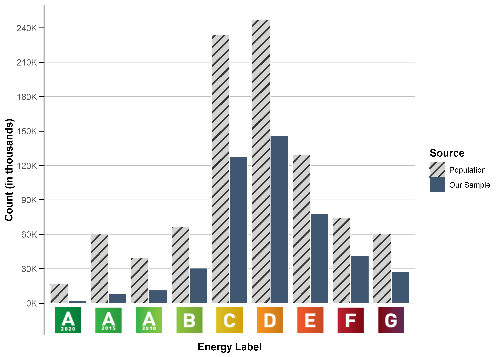
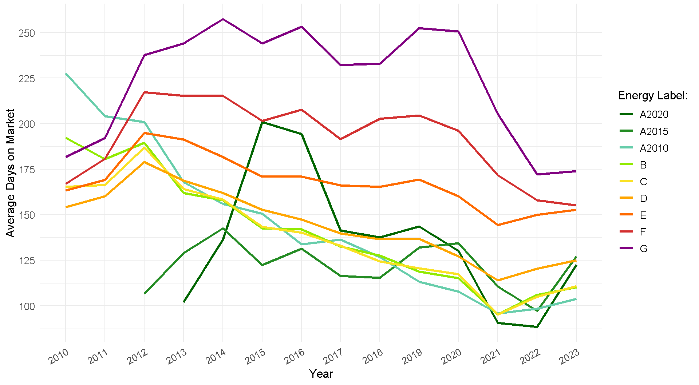
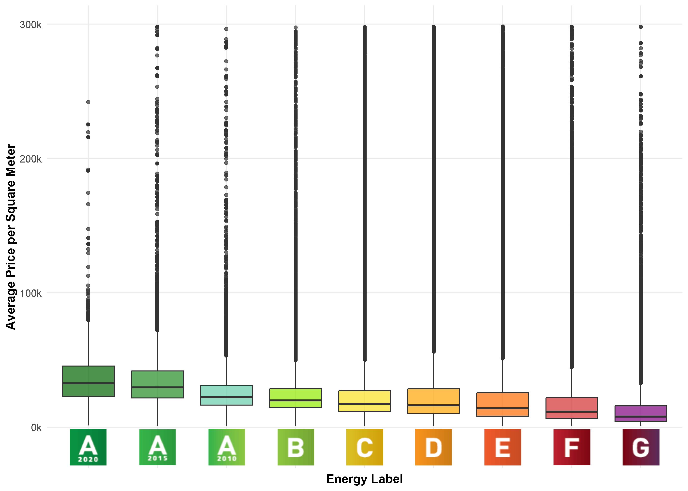
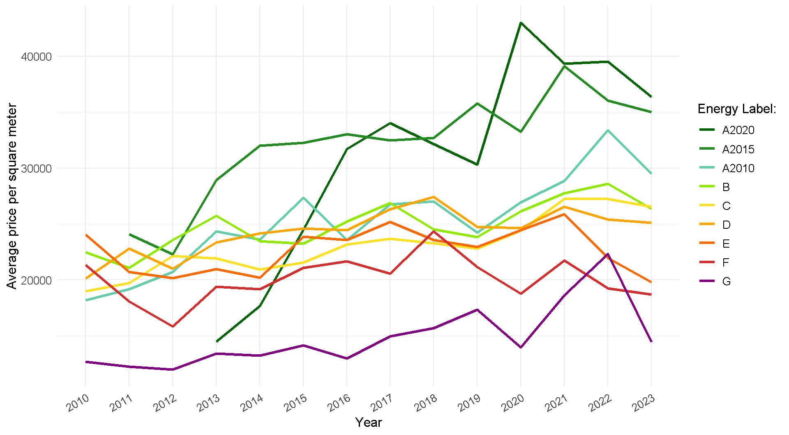
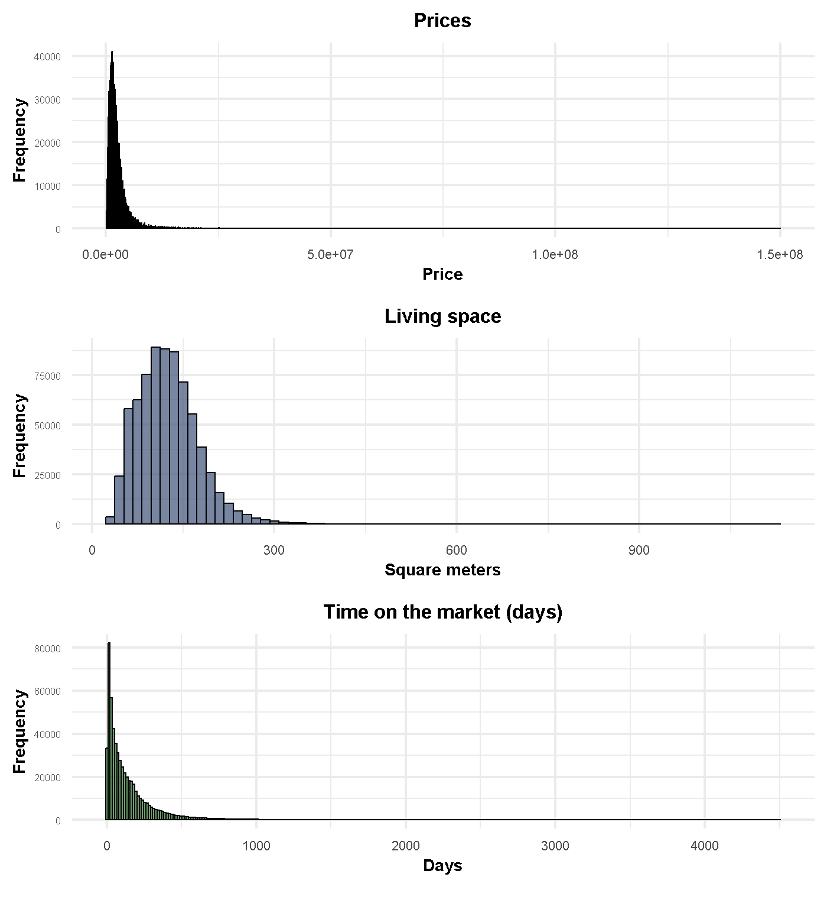
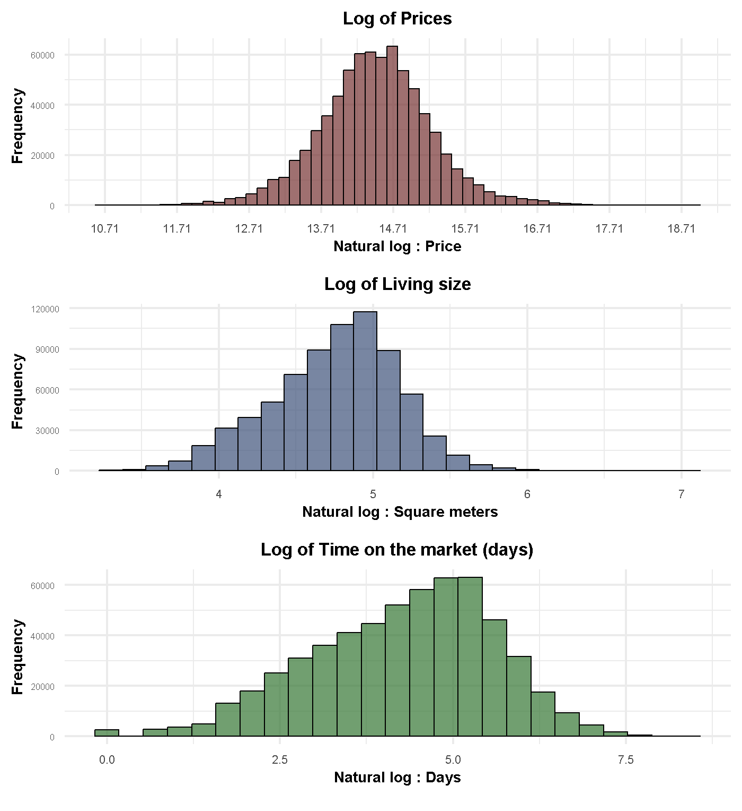

| Literature Review - Overview | ||||||
| Reference | Country | Location | Variable of interest | Type of price | Data period | Sample Size1 |
|---|---|---|---|---|---|---|
| (Næss-Schmidt et al. 2015) | Denmark | Whole country | EPC labes A to G with G and D as reference | Transaction price | 2006-2014 | 355,000 (S) |
| (Jensen et al. 2016) | Denmark | Whole country | EPC labels A,B,C compared to others and estimates of EPC LABELS A+B, C,D,E,F,G | Transaction price | 2007-2012 | 117,483 (S) |
| (Stenvall et al. 2022) | Sweden | • Malmö • Göteborg • Linköping • Stockholm • Luleå • Umeå |
ECP labels (AB,ABC,EFG) & High vs Low energy Efficiency (kWh per year) | Transaction price | 2019 | 21,696 (S) |
| (Wahlström 2016) | Sweden | Whole Country | ln (kWh per year) | Transaction price | 2009-2010 | 69,698 (S) |
| (Cerin et al. 2014) | Sweden | • Gothenburg • Malmö • Stockholm • Lund • Umeå • Gävle • Östersund • Uppsala |
Ln(kWh per year/sqm) | Transaction price | 2009-2010 | 67,559 (S) |
| (Wilhelmsson 2019) | Sweden | Whole Country | A-C Treatment group and D-G is the control group | Transaction price | 2013-2018 | 100,000 (S) |
| (Högberg 2013) | Sweden | Stockholm | Ln(kWh per year/sqm) | Transaction price | 2009 | 1,073 (S) |
| (Wilhelmsson 2023) | Sweden | Stockholm | Both energy performance i.e. kWh per year per square meter and Energy Label from A-G | Transaction price | 2012-2018 | 5,200 (S) |
| (Khazal and Sønstebø 2023) | Norway | Whole Country | EPC labels A to G with non-labeled property as reference | Listed price | • 2011-2019 (R) • 2010-2017 (S) |
• 750,000 (S) • 670,000 (R) |
| (Olaussen et al. 2019) | Norway | Oslo | EPC labels A to G | Transaction price | 2000-2014 | 4,397 (S) |
| (Olaussen et al. 2017) | Norway | Oslo | EPC labels A to G with F as reference | Transaction price | 2000-2014 | 3,912 (S) |
| (Fuerst et al. 2016) | Finland | • Helsinki, Espoo • Vantaa |
EPC labels A-G with A, B and C grouped together where D is a reference | Transaction price | 2009-2012 | 6,194 (S) |
| (Brounen and Kok 2011) | Netherlands | Whole country | EPC labels A to G and grouped labels A,B and C against the others with D as a reference. | Transaction price | 2008- August 2009 | • 31,993 (S) (labeled dwellings) • 145,325 (S) (non-labeled dwellings) |
| (Fuerst et al. 2016) | Wales | Whole country | EPC labels A to G with D as a reference | Transaction price | 2003- February 2014 | 191,544 (S) |
| (Ayala et al. 2016) | Spain | Whole country | A,B and C labes and A,B,C,D labels versus other less efficient labels | Stated Price by resident | 2013 | 1,507 (S) |
| (Hyland et al. 2013) | Ireland | Whole country | A,B,C,E,F/G with D label as reference | Listed Price and rents | 2008-2012 | • 397,258 (S) • 888,211 (R) |
| (Fregonara et al. 2017) | Italy | Turin | labels A to G with D as reference | • Transactions price • Listed price • Difference between Transaction Price and Listed Price |
2011-2014 | 879 (S) |
| (Marmolejo-Duarte and Chen 2019) | Spain | Barcelona | labels A to G with G as reference | Listed Price and rents | 2015 | 3,479 (S) |
| (Taruttis and Weber 2022) | Germany | Whole country | Energy consumption (in 100 kWh/m²a) | Listed price | 2014-2018 | 422,242 (S) |
| (Fuerst et al. 2015) | England | Whole country | labels A to G with D as reference | Transaction price | 1995-2012 | 333,095 (S) |
| (Bio Intelligence Service et al. 2013) | Austria | • Vienna • lower Austria |
labels A to G | Listed price | July – December 2012 | • 1,189 (S) • 1,026 (R) |
| (Bio Intelligence Service et al. 2013) | Belgium | • Brussels-capital • Flanders • Wallonia |
EPC CPEB score | Listed price | July – December 2012 | • 18,200 (S) • 8076 (R) |
| (Bio Intelligence Service et al. 2013) | France | • Lille • Marseille |
labels A to G | Transaction price | January 2011 - October 2012 | 3178 (S) |
| (Bio Intelligence Service et al. 2013) | Ireland | Whole country | EPC BER Label A1-G | Listed price | 2008-2012 | • 20,000 (S) • 28,000 (R) |
| (Bio Intelligence Service et al. 2013) | United Kingdom | Oxford | EPC labels A - G and Energy efficiency score | Transaction price | February - September 2012 | 236 (S) |
| (Copiello and Coletto 2023) | Italy | Padua | EPC labels & energy performance index (kWh/m^2 per year) | Listed price | March - July 2022 | 321 (S) |
| (McCord et al. 2020) | Ireland | Belfast | EPC labels | Transaction price | April 2013 - July 2014 | 1,478 (S) |
| (Barreca et al. 2021) | Italy | Turin | EPC labels | Listed price | 2015-2018 | 2,092 (S) |
| (Dell’Anna et al. 2019) | Italy & Spain | • Turin • Barcelona |
EPC labels | Listed price | 2014-2018 | 3,224 (S) |
| 1 (S) = Sales price; (R) = Rental price | ||||||
Appendix
A. Literature Overview
B. Calorific Values
| Calorific values and CO₂ emission factors | |||||
| Energy source | Unit | Weight (kg) | Energy content (kWh/unit) | CO2 emissions (kg CO2/unit) |
CO2 emissions (kg CO2/kWh) |
|---|---|---|---|---|---|
| Affald | ton | 1,000 | 2917.00 | — | — |
| Brænde, Klv. | Kløvet og stablet rummeter | ca. 550 | 2200.00 | — | — |
| Brænde, Skr. | Skov rummeter | ca. 430 | 1700.00 | — | — |
| Brænde, Rm. | Kasse rummeter | ca. 250 | 1200.00 | — | — |
| Træpiller | m³ | 660 | 3208.00 | — | — |
| Træpiller | ton | 1,000 | 4861.00 | — | — |
| Træ flis | m³ | 250 | 780.00 | — | — |
| Træ flis | ton | 1,000 | 2600.00 | — | — |
| Halm | m³ | 125 | 503.00 | — | — |
| Halm | ton | 1,000 | 4028.00 | — | — |
| Halmpiller | ton | 1,000 | 4440.00 | — | — |
| Fuelolie | kg | 1 | 11.30 | 3.173 | 0.281 |
| Fuelolie | liter | 0.98 | 11.10 | 3.117 | 0.281 |
| Fyringsgasolie | kg | 1 | 11.90 | 3.170 | 0.266 |
| Fyringsgasolie | liter | 0.85 | 10.10 | 2.691 | 0.266 |
| Naturgas | m³ | 0.84 | 11.00 | 2.245 | 0.204 |
| Bygas | m³ | 0.76 | 5.90 | 1.204 | 0.204 |
| Biogas | m³ | - | 6.39 | — | — |
| LPG (flydende flaskegas) | ton | 1,000 | 12800.00 | 2995.180 | 0.234 |
| Petroleum | ton | 1,000 | 12080.00 | 3131.110 | 0.259 |
| Petroleum | liter | 0.8 | 9.70 | 2.514 | 0.259 |
| Koks | ton | 1,000 | 8140.00 | 3164.810 | 0.389 |
| Koks | Hl | 40 | 224.00 | 87.091 | 0.389 |
| Kul (stenkul) | ton | 1,000 | 7360.00 | — | — |
| Fjernvarme | m³ | - | 40.60 | — | — |
| Fjernvarme | kWh | - | 1.00 | 0.065 | 0.065 |
| Fjernvarme | MWh | - | 1000.00 | — | — |
| Fjernvarme | Gcal | - | 1163.00 | — | — |
| Fjernvarme | GJ | - | 278.00 | — | — |
| Fjernvarme | MJ | - | 0.28 | — | — |
| El | kWh | - | 1.00 | 0.197 | 0.197 |
C. Text Classification models: All training results
| Text classification results for Solar Cells Identification | |||||||
| Classification model | Feature engineering | Sampling method | Classification problem | Recall (%) | Precision (%) | F1-score (%) | Accuracy (%) |
|---|---|---|---|---|---|---|---|
| SVM | TF-IDF bi-Gram | NoSampling | Solarcells | 98.71 | 98.76 | 98.73 | 98.86 |
| SVM | TF-IDF bi-Gram | Oversample | Solarcells | 98.69 | 98.75 | 98.72 | 98.85 |
| Logistic Regression | TF-IDF bi-Gram | Oversample | Solarcells | 98.75 | 98.40 | 98.57 | 98.81 |
| Logistic Regression | TF-IDF bi-Gram | SMOTE | Solarcells | 98.69 | 98.43 | 98.56 | 98.81 |
| Logistic Regression | TF-IDF bi-Gram | NoSampling | Solarcells | 98.45 | 98.61 | 98.53 | 98.81 |
| SVM | Bag of words | NoSampling | Solarcells | 98.43 | 98.29 | 98.36 | 98.77 |
| Logistic Regression | Bag of words | NoSampling | Solarcells | 96.59 | 96.44 | 96.52 | 96.94 |
| Logistic Regression | Bag of words | Oversample | Solarcells | 96.59 | 96.33 | 96.46 | 96.93 |
| SVM | word2vec | NoSampling | Solarcells | 96.49 | 96.38 | 96.44 | 96.92 |
| SVM | TF-IDF bi-Gram | Undersample | Solarcells | 96.91 | 95.91 | 96.41 | 96.91 |
| SVM | TF-IDF uni-Gram | NoSampling | Solarcells | 96.43 | 96.38 | 96.41 | 96.91 |
| SVM | Bag of words | Oversample | Solarcells | 96.70 | 96.09 | 96.40 | 96.91 |
| SVM | TF-IDF uni-Gram | Oversample | Solarcells | 96.46 | 96.28 | 96.37 | 96.91 |
| SVM | TF-IDF uni-Gram | SMOTE | Solarcells | 96.41 | 96.33 | 96.37 | 96.91 |
| SVM | word2vec | SMOTE | Solarcells | 96.70 | 95.99 | 96.34 | 96.90 |
| Logistic Regression | TF-IDF uni-Gram | NoSampling | Solarcells | 96.38 | 96.28 | 96.33 | 96.90 |
| SVM | word2vec | Oversample | Solarcells | 96.81 | 95.70 | 96.25 | 96.88 |
| Logistic Regression | word2vec | NoSampling | Solarcells | 96.33 | 96.12 | 96.22 | 96.88 |
| Logistic Regression | Bag of words | SMOTE | Solarcells | 96.03 | 95.82 | 95.92 | 96.58 |
| Logistic Regression | TF-IDF uni-Gram | Oversample | Solarcells | 96.67 | 95.39 | 96.03 | 96.83 |
| Logistic Regression | TF-IDF uni-Gram | SMOTE | Solarcells | 96.62 | 95.42 | 96.02 | 96.83 |
| Logistic Regression | word2vec | SMOTE | Solarcells | 96.73 | 95.03 | 95.87 | 96.80 |
| SVM | word2vec | Undersample | Solarcells | 96.83 | 94.73 | 95.77 | 96.78 |
| Logistic Regression | TF-IDF bi-Gram | Undersample | Solarcells | 96.83 | 94.55 | 95.68 | 96.76 |
| Logistic Regression | word2vec | Oversample | Solarcells | 96.75 | 94.62 | 95.68 | 96.76 |
| SVM | fasttext | NoSampling | Solarcells | 95.74 | 95.35 | 95.55 | 96.73 |
| SVM | Bag of words | Undersample | Solarcells | 96.83 | 94.12 | 95.46 | 96.71 |
| Logistic Regression | Bag of words | Undersample | Solarcells | 96.78 | 94.17 | 95.46 | 96.71 |
| SVM | TF-IDF uni-Gram | Undersample | Solarcells | 96.81 | 94.09 | 95.43 | 96.71 |
| SVM | fasttext | SMOTE | Solarcells | 96.65 | 93.59 | 95.09 | 96.64 |
| Logistic Regression | TF-IDF uni-Gram | Undersample | Solarcells | 96.70 | 93.47 | 95.06 | 96.63 |
| SVM | fasttext | Oversample | Solarcells | 96.65 | 93.29 | 94.94 | 96.60 |
| Logistic Regression | word2vec | Undersample | Solarcells | 96.73 | 92.80 | 94.72 | 96.55 |
| Naive Bayes | TF-IDF bi-Gram | NoSampling | Solarcells | 96.36 | 92.81 | 94.55 | 96.52 |
| Naive Bayes | TF-IDF bi-Gram | SMOTE | Solarcells | 96.41 | 92.06 | 94.18 | 96.44 |
| Naive Bayes | TF-IDF bi-Gram | Oversample | Solarcells | 96.41 | 91.99 | 94.14 | 96.43 |
| SVM | fasttext | Undersample | Solarcells | 96.46 | 91.60 | 93.97 | 96.39 |
| Logistic Regression | fasttext | NoSampling | Solarcells | 94.07 | 93.86 | 93.96 | 96.41 |
| Naive Bayes | Bag of words | NoSampling | Solarcells | 96.01 | 91.58 | 93.74 | 96.34 |
| Naive Bayes | TF-IDF bi-Gram | Undersample | Solarcells | 96.57 | 90.64 | 93.51 | 96.29 |
| Logistic Regression | fasttext | SMOTE | Solarcells | 96.06 | 90.80 | 93.35 | 96.26 |
| Logistic Regression | fasttext | Oversample | Solarcells | 96.22 | 90.64 | 93.35 | 96.26 |
| Naive Bayes | Bag of words | Oversample | Solarcells | 96.04 | 88.92 | 92.34 | 96.03 |
| Naive Bayes | Bag of words | Undersample | Solarcells | 96.12 | 88.68 | 92.25 | 96.01 |
| Logistic Regression | fasttext | Undersample | Solarcells | 95.98 | 88.60 | 92.14 | 95.99 |
| Naive Bayes | Bag of words | SMOTE | Solarcells | 95.29 | 89.11 | 92.10 | 95.98 |
| Naive Bayes | TF-IDF uni-Gram | NoSampling | Solarcells | 92.20 | 91.40 | 91.80 | 95.95 |
| Naive Bayes | TF-IDF uni-Gram | Oversample | Solarcells | 96.20 | 87.70 | 91.75 | 95.90 |
| Naive Bayes | TF-IDF uni-Gram | SMOTE | Solarcells | 96.17 | 87.72 | 91.75 | 95.90 |
| Naive Bayes | TF-IDF uni-Gram | Undersample | Solarcells | 96.28 | 87.16 | 91.49 | 95.84 |
| Text classification results for Solar Heating Identification | |||||||
| Classification model | Feature engineering | Sampling method | Classification problem | Recall (%) | Precision (%) | F1-score (%) | Accuracy (%) |
|---|---|---|---|---|---|---|---|
| SVM | TF-IDF bi-Gram | NoSampling | Solarcells | 98.71 | 98.76 | 98.73 | 98.86 |
| SVM | TF-IDF bi-Gram | Oversample | Solarcells | 98.69 | 98.75 | 98.72 | 98.85 |
| Logistic Regression | TF-IDF bi-Gram | Oversample | Solarcells | 98.75 | 98.40 | 98.57 | 98.81 |
| Logistic Regression | TF-IDF bi-Gram | SMOTE | Solarcells | 98.69 | 98.43 | 98.56 | 98.81 |
| Logistic Regression | TF-IDF bi-Gram | NoSampling | Solarcells | 98.45 | 98.61 | 98.53 | 98.81 |
| SVM | Bag of words | NoSampling | Solarcells | 98.43 | 98.29 | 98.36 | 98.77 |
| Logistic Regression | Bag of words | NoSampling | Solarcells | 96.59 | 96.44 | 96.52 | 96.94 |
| Logistic Regression | Bag of words | Oversample | Solarcells | 96.59 | 96.33 | 96.46 | 96.93 |
| SVM | word2vec | NoSampling | Solarcells | 96.49 | 96.38 | 96.44 | 96.92 |
| SVM | TF-IDF bi-Gram | Undersample | Solarcells | 96.91 | 95.91 | 96.41 | 96.91 |
| SVM | TF-IDF uni-Gram | NoSampling | Solarcells | 96.43 | 96.38 | 96.41 | 96.91 |
| SVM | Bag of words | Oversample | Solarcells | 96.70 | 96.09 | 96.40 | 96.91 |
| SVM | TF-IDF uni-Gram | Oversample | Solarcells | 96.46 | 96.28 | 96.37 | 96.91 |
| SVM | TF-IDF uni-Gram | SMOTE | Solarcells | 96.41 | 96.33 | 96.37 | 96.91 |
| SVM | word2vec | SMOTE | Solarcells | 96.70 | 95.99 | 96.34 | 96.90 |
| Logistic Regression | TF-IDF uni-Gram | NoSampling | Solarcells | 96.38 | 96.28 | 96.33 | 96.90 |
| SVM | word2vec | Oversample | Solarcells | 96.81 | 95.70 | 96.25 | 96.88 |
| Logistic Regression | word2vec | NoSampling | Solarcells | 96.33 | 96.12 | 96.22 | 96.88 |
| Logistic Regression | Bag of words | SMOTE | Solarcells | 96.03 | 95.82 | 95.92 | 96.58 |
| Logistic Regression | TF-IDF uni-Gram | Oversample | Solarcells | 96.67 | 95.39 | 96.03 | 96.83 |
| Logistic Regression | TF-IDF uni-Gram | SMOTE | Solarcells | 96.62 | 95.42 | 96.02 | 96.83 |
| Logistic Regression | word2vec | SMOTE | Solarcells | 96.73 | 95.03 | 95.87 | 96.80 |
| SVM | word2vec | Undersample | Solarcells | 96.83 | 94.73 | 95.77 | 96.78 |
| Logistic Regression | TF-IDF bi-Gram | Undersample | Solarcells | 96.83 | 94.55 | 95.68 | 96.76 |
| Logistic Regression | word2vec | Oversample | Solarcells | 96.75 | 94.62 | 95.68 | 96.76 |
| SVM | fasttext | NoSampling | Solarcells | 95.74 | 95.35 | 95.55 | 96.73 |
| SVM | Bag of words | Undersample | Solarcells | 96.83 | 94.12 | 95.46 | 96.71 |
| Logistic Regression | Bag of words | Undersample | Solarcells | 96.78 | 94.17 | 95.46 | 96.71 |
| SVM | TF-IDF uni-Gram | Undersample | Solarcells | 96.81 | 94.09 | 95.43 | 96.71 |
| SVM | fasttext | SMOTE | Solarcells | 96.65 | 93.59 | 95.09 | 96.64 |
| Logistic Regression | TF-IDF uni-Gram | Undersample | Solarcells | 96.70 | 93.47 | 95.06 | 96.63 |
| SVM | fasttext | Oversample | Solarcells | 96.65 | 93.29 | 94.94 | 96.60 |
| Logistic Regression | word2vec | Undersample | Solarcells | 96.73 | 92.80 | 94.72 | 96.55 |
| Naive Bayes | TF-IDF bi-Gram | NoSampling | Solarcells | 96.36 | 92.81 | 94.55 | 96.52 |
| Naive Bayes | TF-IDF bi-Gram | SMOTE | Solarcells | 96.41 | 92.06 | 94.18 | 96.44 |
| Naive Bayes | TF-IDF bi-Gram | Oversample | Solarcells | 96.41 | 91.99 | 94.14 | 96.43 |
| SVM | fasttext | Undersample | Solarcells | 96.46 | 91.60 | 93.97 | 96.39 |
| Logistic Regression | fasttext | NoSampling | Solarcells | 94.07 | 93.86 | 93.96 | 96.41 |
| Naive Bayes | Bag of words | NoSampling | Solarcells | 96.01 | 91.58 | 93.74 | 96.34 |
| Naive Bayes | TF-IDF bi-Gram | Undersample | Solarcells | 96.57 | 90.64 | 93.51 | 96.29 |
| Logistic Regression | fasttext | SMOTE | Solarcells | 96.06 | 90.80 | 93.35 | 96.26 |
| Logistic Regression | fasttext | Oversample | Solarcells | 96.22 | 90.64 | 93.35 | 96.26 |
| Naive Bayes | Bag of words | Oversample | Solarcells | 96.04 | 88.92 | 92.34 | 96.03 |
| Naive Bayes | Bag of words | Undersample | Solarcells | 96.12 | 88.68 | 92.25 | 96.01 |
| Logistic Regression | fasttext | Undersample | Solarcells | 95.98 | 88.60 | 92.14 | 95.99 |
| Naive Bayes | Bag of words | SMOTE | Solarcells | 95.29 | 89.11 | 92.10 | 95.98 |
| Naive Bayes | TF-IDF uni-Gram | NoSampling | Solarcells | 92.20 | 91.40 | 91.80 | 95.95 |
| Naive Bayes | TF-IDF uni-Gram | Oversample | Solarcells | 96.20 | 87.70 | 91.75 | 95.90 |
| Naive Bayes | TF-IDF uni-Gram | SMOTE | Solarcells | 96.17 | 87.72 | 91.75 | 95.90 |
| Naive Bayes | TF-IDF uni-Gram | Undersample | Solarcells | 96.28 | 87.16 | 91.49 | 95.84 |
| Text classification results for Heat Pump Identification | |||||||
| Classification model | Feature engineering | Sampling method | Classification problem | Recall (%) | Precision (%) | F1-score (%) | Accuracy (%) |
|---|---|---|---|---|---|---|---|
| SVM | TF-IDF bi-Gram | NoSampling | Heat pump | 98.00 | 98.96 | 98.36 | 99.59 |
| SVM | TF-IDF bi-Gram | Oversample | Heat pump | 98.00 | 98.96 | 98.36 | 99.59 |
| Logistic Regression | TF-IDF bi-Gram | SMOTE | Heat pump | 98.40 | 97.06 | 98.00 | 99.43 |
| Logistic Regression | TF-IDF bi-Gram | NoSampling | Heat pump | 97.00 | 98.56 | 97.87 | 99.47 |
| Logistic Regression | TF-IDF bi-Gram | Oversample | Heat pump | 98.62 | 96.73 | 97.66 | 99.00 |
| SVM | TF-IDF bi-Gram | Undersample | Heat pump | 99.04 | 94.29 | 97.00 | 99.13 |
| Logistic Regression | Bag of words | Oversample | Heat pump | 97.59 | 93.89 | 96.00 | 98.90 |
| SVM | Bag of words | Oversample | Heat pump | 97.02 | 94.60 | 96.00 | 98.93 |
| SVM | Bag of words | NoSampling | Heat pump | 96.00 | 96.16 | 96.00 | 99.01 |
| Logistic Regression | Bag of words | NoSampling | Heat pump | 95.49 | 96.38 | 95.93 | 98.99 |
| SVM | TF-IDF uni-Gram | NoSampling | Heat pump | 95.00 | 96.00 | 95.82 | 98.96 |
| Logistic Regression | TF-IDF uni-Gram | NoSampling | Heat pump | 94.82 | 96.25 | 95.53 | 98.89 |
| Logistic Regression | Bag of words | SMOTE | Heat pump | 96.10 | 94.92 | 95.50 | 98.86 |
| SVM | TF-IDF uni-Gram | Oversample | Heat pump | 97.09 | 93.95 | 95.50 | 98.85 |
| Logistic Regression | TF-IDF uni-Gram | SMOTE | Heat pump | 96.84 | 93.65 | 95.22 | 98.78 |
| Logistic Regression | TF-IDF uni-Gram | Oversample | Heat pump | 97.48 | 93.05 | 95.21 | 98.77 |
| SVM | TF-IDF uni-Gram | SMOTE | Heat pump | 97.00 | 93.78 | 95.00 | 98.81 |
| Logistic Regression | TF-IDF bi-Gram | Undersample | Heat pump | 98.94 | 91.08 | 94.84 | 99.00 |
| Logistic Regression | Bag of words | Undersample | Heat pump | 98.30 | 89.29 | 94.00 | 98.31 |
| SVM | word2vec | NoSampling | Heat pump | 92.47 | 95.04 | 93.74 | 98.45 |
| SVM | Bag of words | Undersample | Heat pump | 98.00 | 89.29 | 93.54 | 98.30 |
| Logistic Regression | word2vec | NoSampling | Heat pump | 91.37 | 95.09 | 93.19 | 98.33 |
| SVM | TF-IDF uni-Gram | Undersample | Heat pump | 98.00 | 87.82 | 93.00 | 98.05 |
| Logistic Regression | TF-IDF uni-Gram | Undersample | Heat pump | 97.94 | 87.01 | 92.15 | 97.91 |
| SVM | fasttext | NoSampling | Heat pump | 89.17 | 92.39 | 91.00 | 97.72 |
| SVM | word2vec | SMOTE | Heat pump | 96.10 | 85.96 | 90.75 | 97.54 |
| Logistic Regression | word2vec | SMOTE | Heat pump | 96.00 | 84.99 | 90.36 | 97.42 |
| SVM | word2vec | Oversample | Heat pump | 96.56 | 83.28 | 89.43 | 97.14 |
| Logistic Regression | word2vec | Oversample | Heat pump | 96.84 | 82.94 | 89.35 | 97.11 |
| Naive Bayes | TF-IDF bi-Gram | NoSampling | Heat pump | 87.00 | 90.00 | 88.70 | 97.21 |
| Naive Bayes | TF-IDF uni-Gram | NoSampling | Heat pump | 88.68 | 87.43 | 88.05 | 97.00 |
| SVM | word2vec | Undersample | Heat pump | 96.00 | 80.96 | 88.03 | 96.71 |
| SVM | fasttext | SMOTE | Heat pump | 95.81 | 80.52 | 87.50 | 96.57 |
| Logistic Regression | word2vec | Undersample | Heat pump | 96.34 | 80.00 | 87.31 | 96.49 |
| SVM | fasttext | Oversample | Heat pump | 96.24 | 78.24 | 86.31 | 96.17 |
| Logistic Regression | fasttext | NoSampling | Heat pump | 82.75 | 90.17 | 86.30 | 96.71 |
| Logistic Regression | fasttext | SMOTE | Heat pump | 94.85 | 77.49 | 85.30 | 95.90 |
| SVM | fasttext | Undersample | Heat pump | 96.06 | 75.27 | 84.40 | 95.55 |
| Logistic Regression | fasttext | Oversample | Heat pump | 95.53 | 75.00 | 84.00 | 96.00 |
| Logistic Regression | fasttext | Undersample | Heat pump | 94.32 | 69.74 | 80.19 | 94.00 |
| Naive Bayes | TF-IDF bi-Gram | SMOTE | Heat pump | 96.88 | 68.00 | 80.00 | 93.89 |
| Naive Bayes | TF-IDF bi-Gram | Oversample | Heat pump | 97.00 | 65.31 | 78.21 | 93.19 |
| Naive Bayes | TF-IDF bi-Gram | Undersample | Heat pump | 97.87 | 63.73 | 77.19 | 92.75 |
| Naive Bayes | TF-IDF uni-Gram | SMOTE | Heat pump | 96.00 | 58.82 | 73.01 | 91.08 |
| Naive Bayes | TF-IDF uni-Gram | Oversample | Heat pump | 96.73 | 54.86 | 70.02 | 89.61 |
| Naive Bayes | TF-IDF uni-Gram | Undersample | Heat pump | 97.30 | 52.31 | 68.04 | 88.54 |
| Naive Bayes | Bag of words | SMOTE | Heat pump | 97.66 | 29.93 | 45.82 | 71.04 |
| Naive Bayes | Bag of words | NoSampling | Heat pump | 98.90 | 25.72 | 40.82 | 64.00 |
| Naive Bayes | Bag of words | Oversample | Heat pump | 98.86 | 25.49 | 40.54 | 63.63 |
| Naive Bayes | Bag of words | Undersample | Heat pump | 99.11 | 24.45 | 39.23 | 61.49 |
D. Results - additional Information
In this appendix we give a clearer overview on what controls variables were included in each model. All variables and their functional form used in this analysis are stated in the summary statistic tables shown in Chapter 4.1 Housing data. All regressions that follow Equation Equation 8.2 share the same control variables. This includes Model 4 to 6 in Table Table 9.1, all models in Table Table 10.1, all models in Table Table 11.1, all models in Table Table 12.1 and all models in Table Table 12.2. These variables are listed here below in table Table 18.1:
| Control variables used in majority of the models | ||
| Category | Control variable | Cross-reference1 |
|---|---|---|
| Property Characteristics | Living space | See Table housing data summary |
| Property Characteristics | Number of rooms | See Table housing data summary |
| Property Characteristics | Number of Bathrooms | See Table housing data summary |
| Property Characteristics | Number of Toilets | See Table housing data summary |
| Property Characteristics | Property Type | See Table housing data summary |
| Property Characteristics | Basement Exists | See Table housing data summary |
| Property Characteristics | Buisness exists in building | See Table housing data summary |
| Property Characteristics | Built-in Outhouse | See Table housing data summary |
| Property Characteristics | Detached Outhouse | See Table housing data summary |
| Property Characteristics | Built-in Carport | See Table housing data summary |
| Property Characteristics | Detached Carport | See Table housing data summary |
| Property Characteristics | Built-in Conservatory | See Table housing data summary |
| Property Characteristics | Detached Conservatory | See Table housing data summary |
| Property Characteristics | Greenhouse Exists | See Table housing data summary |
| Property Characteristics | Swimming pool Exists | See Table housing data summary |
| Property Characteristics | Number of floors in building | See Table housing data summary |
| Property quality indicator | Construction Period | See Table housing data summary |
| Property quality indicator | Wall material | See Table housing data summary |
| Property quality indicator | Roof material | See Table housing data summary |
| Property quality indicator | Building last renovation | See Table housing data summary |
| Property quality indicator | Boiler | See Table EPC data summary |
| Property quality indicator | Wood Stove | See Table EPC data summary |
| Property quality indicator | Oil Stove | See Table EPC data summary |
| Property quality indicator | Masonary heater | See Table EPC data summary |
| Property quality indicator | Fireplace | See Table EPC data summary |
| Geographical control | Isochrone radius | See Table EPC data summary |
| Geographical control | Distance to capital | See Table EPC data summary |
| Geographical control | Average population density | See Table EPC data summary |
| Geographical control | Forest buffer | See Table EPC data summary |
| Geographical control | Park buffer | See Table EPC data summary |
| Geographical control | Nature reserve buffer | See Table EPC data summary |
| Geographical control | Wetland buffer | See Table EPC data summary |
| Geographical control | Ocean or beach buffer | See Table EPC data summary |
| Geographical control | River, stream or canal buffer | See Table EPC data summary |
| Geographical control | Meadow, scrub or heath buffer | See Table EPC data summary |
| Geographical control | Rail- or light railway buffer | See Table EPC data summary |
| Geographical control | Water or reservoir buffer | See Table EPC data summary |
| 1 Note: The only exception to these control variables applies to all models in Table 8, which focus on the property type segment. These models do not include a variable indicating property type. | ||
The only exception from the control variables used in this analysis are Models 1 to 3 in Table Table 9.1. The control variables included in each of these models are stated in Table Table 18.2 here below:
| Control variables included in each model | ||||
| Category | Control variable | Model 1 | Model 2 | Model 3 |
|---|---|---|---|---|
| Property Characteristics | Living space | YES | YES | YES |
| Property Characteristics | Number of rooms | YES | YES | YES |
| Property Characteristics | Number of Bathrooms | YES | YES | YES |
| Property Characteristics | Number of Toilets | YES | YES | YES |
| Property Characteristics | Property Type | YES | YES | YES |
| Property Characteristics | Basement Exists | NO | NO | YES |
| Property Characteristics | Buisness exists in building | NO | NO | YES |
| Property Characteristics | Built-in Outhouse | NO | NO | YES |
| Property Characteristics | Detached Outhouse | NO | NO | YES |
| Property Characteristics | Built-in Carport | NO | NO | YES |
| Property Characteristics | Detached Carport | NO | NO | YES |
| Property Characteristics | Built-in Conservatory | NO | NO | YES |
| Property Characteristics | Detached Conservatory | NO | NO | YES |
| Property Characteristics | Greenhouse Exists | NO | NO | YES |
| Property Characteristics | Swimming pool Exists | NO | NO | YES |
| Property Characteristics | Number of floors in building | YES | YES | YES |
| Property Characteristics | Sold before built | YES | YES | YES |
| Property quality indicator | Construction Period | YES | YES | YES |
| Property quality indicator | Wall material | NO | YES | YES |
| Property quality indicator | Roof material | NO | YES | YES |
| Property quality indicator | Building last renovation | NO | YES | YES |
| Property quality indicator | Boiler | NO | YES | YES |
| Property quality indicator | Wood Stove | NO | YES | YES |
| Property quality indicator | Oil Stove | NO | YES | YES |
| Property quality indicator | Masonary heater | NO | YES | YES |
| Property quality indicator | Fireplace | NO | YES | YES |
| Geographical control | Isochrone radius | NO | NO | NO |
| Geographical control | Distance to capital | NO | NO | NO |
| Geographical control | Average population density | NO | NO | NO |
| Geographical control | Forest buffer | NO | NO | NO |
| Geographical control | Park buffer | NO | NO | NO |
| Geographical control | Nature reserve buffer | NO | NO | NO |
| Geographical control | Wetland buffer | NO | NO | NO |
| Geographical control | Ocean or beach buffer | NO | NO | NO |
| Geographical control | River, stream or canal buffer | NO | NO | NO |
| Geographical control | Meadow, scrub or heath buffer | NO | NO | NO |
| Geographical control | Rail- or light railway buffer | NO | NO | NO |
| Geographical control | Water or resovoir buffer | NO | NO | NO |
E. Additional figures





